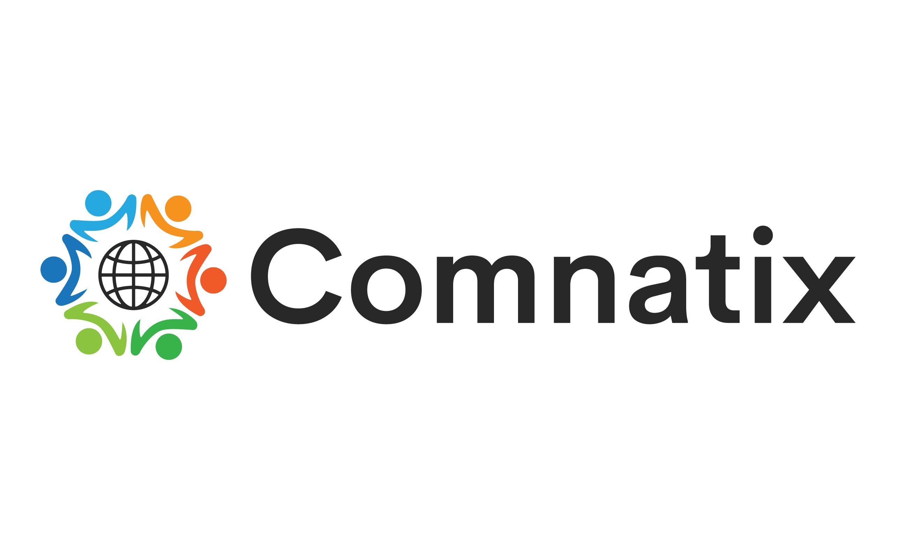

Data Scientist | RAG & LLM Builder | GenAI Enthusiast
About Me
I'm Rohan Pujari, a Data Scientist with 5+ years of experience designing, deploying, and evaluating production AI/ML systems across cloud environments. Over the last two years my focus has shifted deeply into applied Generative AI — building Retrieval-Augmented Generation (RAG) assistants, LLM-powered document intelligence platforms, and agentic workflows that turn messy, unstructured data into grounded, source-cited answers.
At Compugra Systems, I've built a commercial insurance RAG assistant with metadata-aware retrieval and licensed-agent handoff guardrails, alongside automated Snowflake ELT pipelines and ML models for insurance risk and eligibility scoring. Before that, at Comnatix, I built a production-grade RAG platform for financial document analysis (10-K, 10-Q, 13F, municipal bonds, structured notes) using AWS Bedrock Claude, Titan Embeddings, and FAISS — achieving 100% extraction accuracy on benchmark reports and cutting manual document-review effort by roughly 70%.
My toolkit spans Python, SQL, LangChain, LangGraph, vector search (FAISS, Chroma), AWS (Bedrock, SageMaker, S3, Lambda), Google Cloud (BigQuery, Vertex AI, Gemini Enterprise), and Snowflake. I care as much about evaluation and guardrails — RAGAS, retrieval relevance, hallucination fallback, PII redaction — as I do about the pipeline itself, because a RAG system nobody trusts isn't useful. I'm energized by cross-functional work that turns AI prototypes into systems that survive contact with real users, real data, and real compliance requirements.
Skills & Technologies
Generative AI & LLMs
- LLMs & Prompt Engineering
- Retrieval-Augmented Generation
- LangChain & LangGraph
- Vector Search (FAISS, Chroma)
- Agentic AI
- AWS Bedrock / OpenAI API
Programming & ML
- Python
- SQL
- Pandas / NumPy
- Scikit-Learn
- TensorFlow / PyTorch
- Spark
Data Engineering
- Snowflake
- Apache Airflow
- Databricks
- ETL / ELT Pipelines
- Scalable Data Pipelines
- BigQuery
Cloud & MLOps
- AWS (Bedrock, SageMaker, S3, Lambda, ECS)
- Google Cloud (Vertex AI, Cloud Run)
- CI/CD for ML (GitHub Actions)
- Model Monitoring & Evaluation
- MLflow Experiment Tracking
- Docker
Data Analysis
- Tableau
- Power BI
- Streamlit
- A/B Testing
- Statistical Analysis
- Time Series Analysis
Responsible AI
- Model Evaluation (ROC-AUC, F1)
- RAGAS (Faithfulness, Relevancy)
- Bias & Fairness Testing
- Guardrails & PII Redaction
- Hallucination Fallback Design
- Stakeholder Communication
Education
Master of Sciences in Data Science
New Jersey Institute of Technology (NJIT)September 2022 - May 2024
- Developed strong foundations in machine learning, natural language processing, and data engineering, with hands-on projects simulating real-world challenges in business, education, and research.
- Gained practical experience building interactive dashboards and automated data pipelines, working with both structured and unstructured data using tools like Python, SQL, Pandas, and Power BI.
- Completed multiple course-based projects involving predictive modeling, text analytics, and data visualization, applying statistical concepts and ML algorithms to real datasets.
- Participated in collaborative coursework involving data storytelling, ETL workflows, and decision-making under uncertainty, preparing for data-driven roles in industry.
Post Graduation Diploma in Data Science
International Institute of Information Technology (IIIT-B)January 2021 - February 2022
- Gained in-depth understanding and practical intuition of core machine learning algorithms including regression, classification and clustering.
- Gained hands-on experience with deep learning models like CNNs, RNNs, and Transformers for tasks in computer vision, time-series forecasting, and NLP.
- Developed strong analytical skills, working on real-world datasets & use cases across various domains.
- Realized the critical importance of data preprocessing, exploratory analysis, and feature engineering in successful model building.
- Built hands-on experience through multiple academic projects, both individually and in teams, applying data science techniques from end-to-end.
Bachelor of Technology
Jawaharlal Nehru Technological University, HyderabadJune 2015 - May 2019
- Built a foundation in core engineering, programming, and mathematics that underpins my later specialization in data science and machine learning.
Work Experience
Data Scientist @ Compugra Systems
Jul 2025 - Present
- Insurance Analytics & ML Platform: Built automated ELT pipelines in Snowflake using Streams, Tasks, and Stored Procedures to ingest, normalize, and validate semi-structured insurance JSON data, enabling scalable analytics and regulatory reporting.
- Developed feature engineering pipelines and supervised ML models for insurance risk and eligibility classification using structured, demographic, and textual policy data, improving underwriting decision support and customer segmentation.
- Delivered interactive Tableau dashboards visualizing risk tiers, eligibility outcomes, and portfolio trends, enabling data-driven underwriting, pricing, and business reporting.
- Commercial Insurance RAG Assistant: Built a Retrieval-Augmented Generation assistant that delivers source-cited guidance on commercial insurance concepts, renewal preparation, and required business documentation.
- Implemented an end-to-end document intelligence pipeline using LangChain and Chroma, including document ingestion, structure-aware chunking, embeddings, metadata-driven vector search, and grounded answer generation.
- Designed metadata-aware retrieval across insurance topics, business types, document versions & effective dates, with guardrails and licensed-agent handoff for coverage, pricing, eligibility & claims questions.
- Developed evaluation scenarios to measure retrieval relevance, citation accuracy, unsupported-answer fallback behavior, latency, and estimated LLM cost, ensuring reliable production performance.

Data Scientist @ Comnatix LLC
Sept 2024 - Jun 2025
- Built a production-grade Retrieval-Augmented Generation (RAG) platform for financial document analysis supporting 10-K, 10-Q, 13F, Municipal Bonds, and Structured Notes using AWS Bedrock Claude, Amazon Titan Embeddings, LangChain, and FAISS vector search.
- Implemented schema-driven document extraction using document-specific prompt templates and auto-classification, achieving 100% extraction accuracy on benchmark financial reports (Starbucks Q2 FY2024 validation).
- Optimized embedding throughput by 8x through parallel Bedrock inference, exponential backoff retry logic, and an MD5-based embedding cache for instant reload of previously processed documents.
- Integrated AWS Bedrock Guardrails with topic restrictions, content filtering, and automatic PII redaction to mitigate prompt injection and sensitive information exposure.
- Built an automated evaluation framework using RAGAS (Faithfulness, Answer Relevancy, Context Precision) with MLflow experiment tracking for continuous model quality monitoring.
- Deployed the application on AWS EC2 using IAM execution roles, an Application Load Balancer, CloudWatch monitoring, and a Streamlit interface supporting document upload, conversational search, and analytics dashboards.
- Collaborated with portfolio managers and investment analysts to integrate AI-generated insights into investment research workflows, reducing manual document review effort by approximately 70%.
Data Scientist @ New Jersey Institute of Technology
Nov 2022 - May 2024
- Built and deployed an end-to-end machine learning pipeline to preprocess and analyze large-scale educational datasets, improving the predictive accuracy of institutional ranking models by 30%.
- Automated data ingestion, validation, and transformation workflows using Python and SQL, reducing manual processing effort by 30% and improving data reliability.
- Designed and implemented a Snowflake data warehouse to manage institutional, research, and website datasets, enabling scalable analytics and reducing reconciliation errors across reporting teams.
- Integrated Snowflake with MicroStrategy to deliver interactive dashboards combining descriptive and predictive analytics for university leadership and strategic planning.
- Enhanced NLP models for sentiment analysis and text summarization on surveys and academic publications, improving insight extraction for policy and academic decisions.
- Applied supervised learning models (Random Forest, Decision Trees) to classify institutions and research outcomes, directly supporting strategic initiatives.
- Used Principal Component Analysis (PCA) to reduce dimensionality in research datasets, contributing to data-driven insights that supported NJIT's improvement toward R1 research classification.
Data Scientist @ Larsen and Toubro Infotech
Dec 2019 - July 2022
- Designed and optimized ETL pipelines for large-scale BFSI datasets, improving reporting efficiency and data accessibility by 20%.
- Developed predictive models using Logistic Regression and Random Forest to forecast customer churn and credit risk, supporting lending and insurance portfolio decisions.
- Applied NLP techniques for sentiment analysis and keyword extraction on customer feedback data, driving actionable product and service improvements.
- Automated data ingestion and reporting workflows using Python and SQL, reducing manual effort by 60% and increasing data refresh frequency from weekly to daily.
- Built Power BI dashboards to visualize KPIs, operational metrics, and risk indicators for business stakeholders.
- Mentored and guided a team of 5 junior data scientists, improving project delivery timelines by 50% and strengthening model development best practices.
Projects
Agentic AI platform that ingests, clusters, summarizes, and categorizes financial and business news in real time.
- Tech stack: Python, LangChain, ChromaDB, FastAPI, Streamlit, PostgreSQL, Google ADK, Gemini.
- Built an AI-powered news intelligence platform that automatically ingests, clusters, summarizes, and categorizes financial and business news articles from multiple sources.
- Designed an agentic workflow using Google ADK and Gemini to generate concise summaries, identify emerging topics, and answer natural-language questions over recent news.
- Implemented Retrieval-Augmented Generation using ChromaDB embeddings and semantic search to provide source-grounded responses with citation support.
- Developed automated news classification, duplicate detection, and topic clustering pipelines to improve retrieval quality and reduce redundant information.
- Built an interactive dashboard enabling users to search, filter, summarize, and monitor news trends in real time through conversational AI.
Real-time heart disease risk prediction using logistic regression deployed on AWS SageMaker with an interactive web frontend.
- Tech stack: Python, Jupyter Notebook, pandas, scikit-learn; data prep and analysis in Excel/CSV formats.
- Built a logistic regression model using structured health data (symptoms, vitals, lifestyle factors) to predict heart disease risk. Packaged model into .tar.gz, deployed it as a real-time endpoint using AWS SageMaker.
- Created a clean Streamlit web app to collect user inputs and invoke the SageMaker endpoint. Applied conditional styling to reflect diagnosis confidence: vibrant UI for risk alerts, muted design for low risk.
- Resolved deployment issues including cold starts, model artifact structure, JSON input formatting, and health checks.
- Demonstrated production-readiness with understanding of SageMaker internals, cost scaling, latency optimization, and autoscaling. Positioned as a strong showcase of full-stack ML deployment on the cloud.
Automated real-time news scraping & summarization using Transformer-based models.
- Tech stack: Python, Flask, HTML/CSS, HuggingFace Transformers, Pegasus (NLP), newspaper3k, feedparser.
- Used feedparser to ingest RSS feeds (e.g., NYT), scraped full articles via newspaper3k, and applied Google's PEGASUS model for abstractive summarization.
- Built a Flask-based web app with custom HTML/CSS to display a scrollable, inshorts-style feed—each card showing a headline, image, and AI-generated summary.
- Optimized Pegasus inference using pre-tokenization and batching to reduce load latency; ensured visual coherence with automated image extraction and fallback handling.
- Enhanced user experience by hiding backend logic (like URLs and RSS controls) and maintaining continuous content refreshes based on feed updates.
Real-time craving prediction using wearables and ML, triggering timely behavioral interventions.
- Tech stack: Python, pandas; ML models: Random Forest & LSTM; model interpretability: SHAP
- Collected sensor data (heart rate, sleep, stress) paired with self-reported mood, engineered time-series features to predict alcohol craving episodes.
- Built Random Forest and LSTM models achieving ~82% accuracy; used SHAP to interpret outputs and identify top risk factors like elevated heart rate and poor sleep
- Developed an app that triggers personalized strategies (mindfulness, alerts, peer support, journaling, activity suggestions) when craving risk is high.
- Demonstrated a simulated 15% reduction in relapse rates, highlighting value for behavioral healthcare and addiction analytics. Explored graph-based approaches for linking clinical concepts across EMR and claims data.
Smart-TV control via webcam-based recognition of five hand gestures using neural network architectures.
- Tech stack: Python, OpenCV, TensorFlow/Keras; architectures: 3D Convolutional Network (Conv3D) and CNN + RNN (LSTM/GRU)
- Built dataset of 2-3 sec videos (30 frames) across five gestures (thumbs up/down, left/right swipe, stop); preprocessed frames for training
- Implemented and compared two models: Conv3D (spatiotemporal video analysis) and CNN+RNN (frame-wise feature extraction + sequence modeling)
- Impact: Enabled real-time, remote-free control of TV functions like volume and playback through gesture commands
Predictive modeling to identify high-risk telecom customers and uncover churn drivers.
- Tech stack: Python, pandas, scikit-learn (with feature engineering, class-balancing techniques like oversampling/SMOTE)
- Analyzed customer-level data from a leading telecom provider; focused on high-value customers (70th percentile of recharge amounts)
- Engineered features, tagged churners based on zero usage criteria, removed churn-phase data; built classification models (e.g., Logistic Regression, Random Forest, XGBoost)
- Identified top churn indicators such as drop in incoming calls and recharge patterns; recommended targeted retention strategies
Logistic-regression-based scoring to rank hot leads for an ed-tech company and boost conversions.
- Tech stack: Python, pandas, scikit-learn; focused on feature engineering, balancing classes, and model calibration
- Dataset: ~9,000 leads from X Education with ~30% baseline conversion; goal was to raise to ~80% through prioritization
- Built a logistic regression model to assign each lead a score (0-100); used train/test split, handled missing values and categorical encodings, tuned threshold for sensitivity/specificity
- Outcome: ~80% accuracy, ~72% precision; key predictors included time spent on site, total visits, lead origin and occupation; recommended using top-scoring leads for sales outreach
Automated pipeline to extract, transform & query Spotify playlist data using AWS.
- Tech stack: Python, Spotipy, AWS Lambda, S3, Glue, Athena (CloudWatch/EventBridge scheduling)
- Built a serverless ETL workflow: fetched JSON data from Spotify API → stored raw data in S3 → triggered Lambda to transform it → cataloged via Glue → enabled SQL querying in Athena
- Impact: Enabled automated, scalable music-data analysis—ideal for exploring trends in playlists (e.g. Top 50 India) and powering analytics dashboards
Predicting daily bike-sharing demand using multiple linear regression.
- Tech stack:Python, pandas, scikit-learn,AWS SageMaker, AWS IAM, Streamlit, boto3, joblib.
- Dataset & goal: Analyzed a bike-sharing provider's historical data to model demand variations; key focus on predicting usage based on date, weather, and seasonality.
- Modeling: Built multiple linear regression models to forecast daily bike rentals; engineered features like temperature, humidity, day-of-week, and seasonal trends.
- Impact: Identified significant demand drivers weather patterns, months, seasons to inform better bike allocation strategies and operational planning.